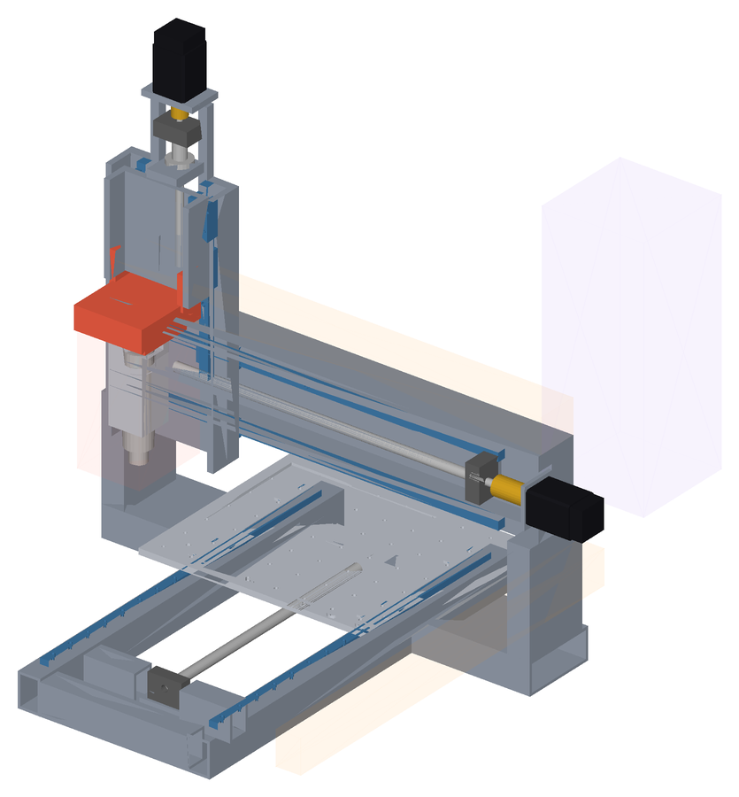
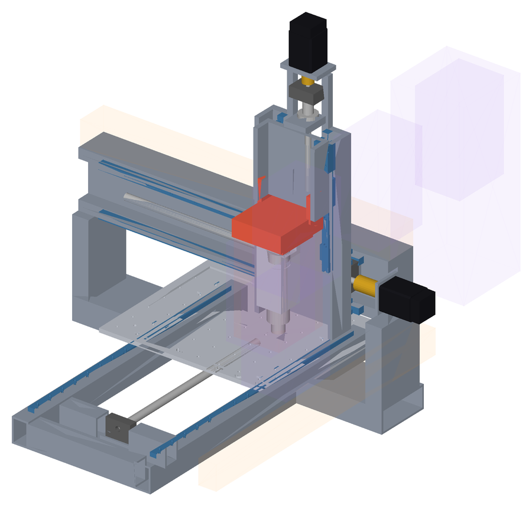
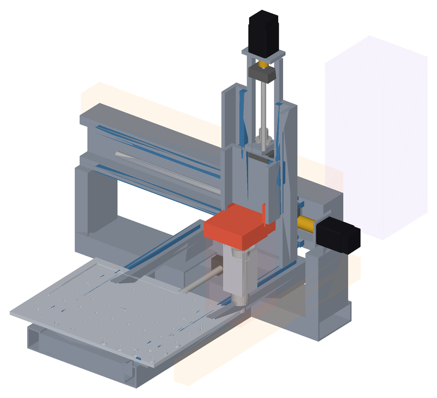
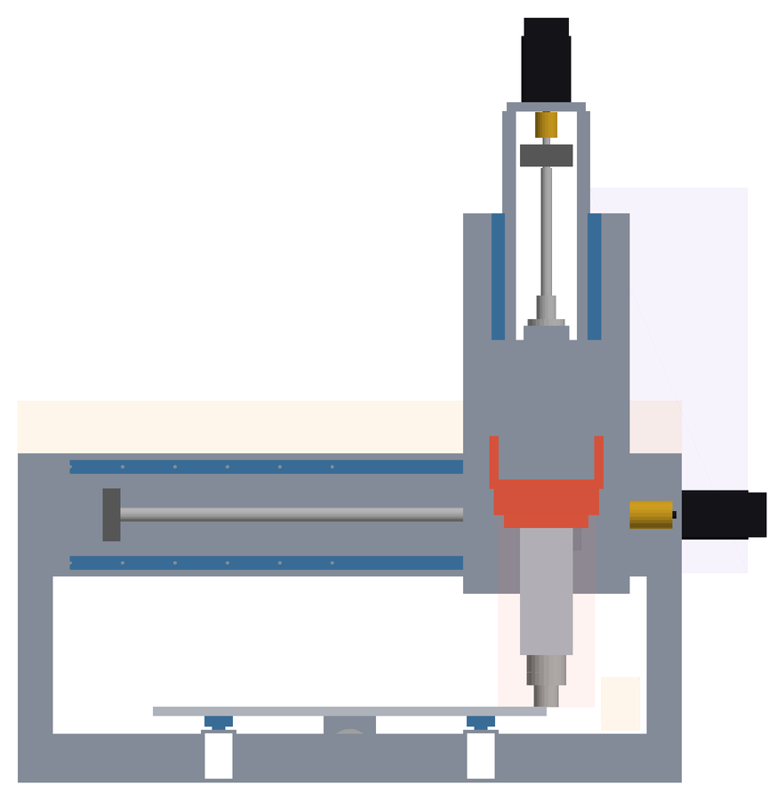
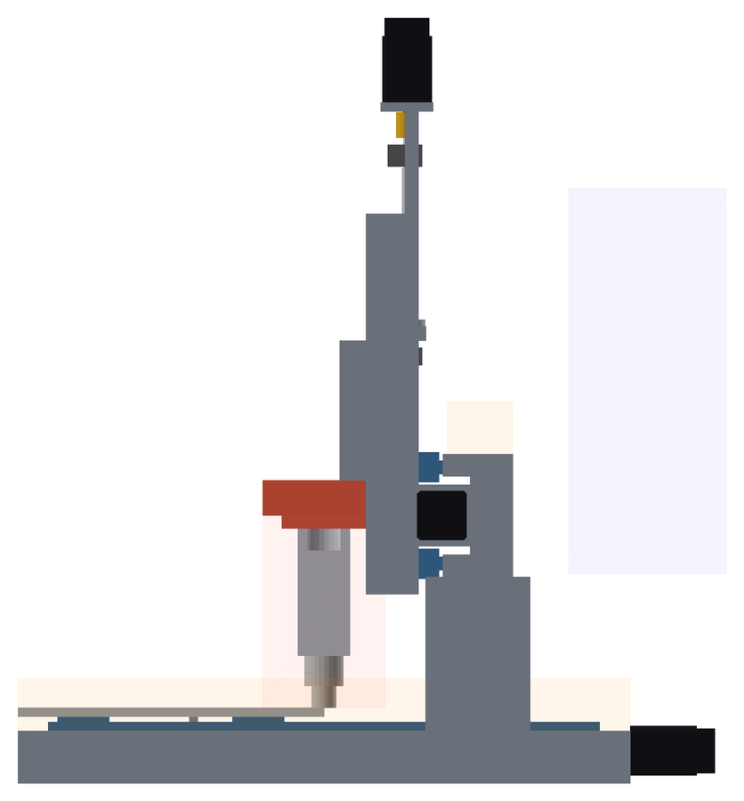
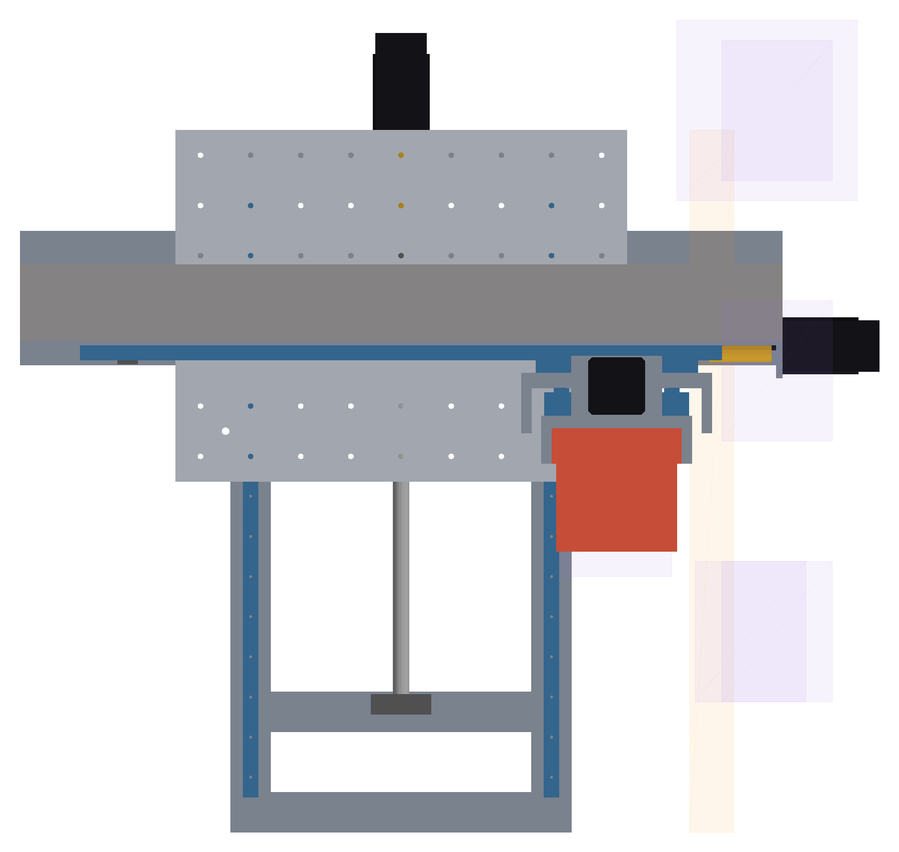

Digital mule
Standard v3.
Assieme parametrico dimensionale della Standard, brutto ma corretto. Il v3 aggiunge al v2, dalla FEA D031, la sella a U che collega la master alle ali della slitta Z e la piastrina chiocciola Z da 16 mm. Monta la testa corta di riferimento SycoTec 5045 AC-ER11 · 2002 5400 appesa sotto il coupling (golden reference, non fornitore di produzione), con master scatolata, slitta Z e carrello X a canale e spalle scatolate, sulla stessa architettura del v1 (trave bassa, telaio a scala, docking a X 440 con magazine dietro la spalla destra). ICD meccanica v4 invariata. Tutte le quote vengono da tools/cad/standard_params.py; lo script costruisce l'assieme in HOME, CENTER, MAX e DOCK, cerca collisioni e giochi, misura ingombri e masse e rigenera questa pagina.
Criteri di accettazione
| Criterio | Esito | Nota |
|---|---|---|
Un solo file di parametri tools/cad/standard_params.py | PASSA | |
Assieme tools/cad/standard_assembly.py, configurazioni HOME / CENTER / MAX / DOCK | PASSA | |
| Guide, pattini, viti e motori dai modelli MultiCNC | PARZIALE | Stesse funzioni di parts.py che generano gli STEP; pattini e chiocciole istanziati a parte perché si muovono |
| Custom: telaio, spalle, trave, tavola Y, slitta Z, carrello X, staffe | PASSA | |
| Datum MACHINE_ORIGIN, PALLET_R1/R2, TOOLDOCK_MASTER, DOCK_POSITION | PASSA | |
| Corse reali 450 × 350 × 140 con margini D019 ≥ 10 mm | PASSA | |
| X HGR15/HGH15CA ZA 640 · Y MGN15H Z1 630 + SFU1605 centrale · Z HGR15/HGH15CA 310 + SFU1204 260 | PASSA | |
| Tavola 450 × 350 × 10, R1/R2, griglia 9 × 7 | PASSA | |
| A · Pattini Z sulla slitta, guide, vite, BK/BF e motore Z sul carrello | PASSA | |
| D030 · Testa SycoTec 5045 AC-ER11 · 2002 5400 appesa, coupling → dado ≤ 220 mm | PASSA | 220 mm con service envelope RIGHT_ANGLE_ASSUMED (25 mm): ipotesi, non quota del fornitore (D031) |
| D031 · Sella a U master ↔ ali della slitta Z e piastrina chiocciola Z irrigidita (mule v3) | PASSA | FEA fase 2a: sottoassieme 1,08 / 0,90 / 7,17 N/µm (v2 striscia 1,00 / 0,42 / 4,25); controllo rapido delle tensioni alla radice della sella ≤ ~10 MPa, submodel con raccordi reali da fare |
| D030 · Asse spindle a 53 mm dalla slitta, inviluppo ICD v4 a ≥ 8 mm | PASSA | Congelato per la Standard v2 (D031); 40 mm resta solo uno scenario ICD v5 |
| D030 · Testa ≤ 4 kg (classe S) | PASSA | 2,7 kg |
| D030 · Baricentro testa ≤ 80 mm sotto il coupling (ICD v4) | NON PASSA | 97 mm; momento d'inerzia sul clamp 0,5 N·m a 2 m/s² contro ~18 N·m di taglio (D014) |
| D031 · Deroga provvisoria Standard: baricentro ≤ 100 mm (golden reference) | PASSA | ICD v4 invariata; con lo spindle OEM: < 80 nessun problema, 95–100 revisione della classe S, > 100 testa da riprogettare |
| A · b ≤ 300 mm e D015 verificata con a e b misurati | PASSA | b = 220 mm · 128 N/µm richiesti · ZA ×2,9 |
| B · Telaio a scala separato dalla cabina | PASSA | Longheroni Y + traverse fronte / BF / posteriore / motore |
| C · Docking unico a X 440, magazine dietro la spalla destra, nessun volume permanente davanti alla trave | PASSA | Corridoio del trasferitore controllato solo in DOCK |
| Nessuna collisione in HOME, CENTER, MAX, DOCK | PASSA | |
| Sweep 5 × 5 × 5 = 125 configurazioni, vertici compresi: nessuna collisione | PASSA | Solo verifica, senza STEP |
| Giochi: < 5 mm FAIL · 5–8 mm WARNING · ≥ 8 mm PASS | PASSA | 0 FAIL · 0 WARNING nello sweep; gioco minimo 8 mm |
| Trasferitore: testa reale lungo 42 pose magazine → dock | PASSA | gioco minimo 8 mm (z_rail_1) |
| D · Soglia dura massa ≤ 42 kg | NON PASSA | 44,9 kg nel mule · 44,9 kg in BOM: accettato come prototipo strutturale sovrappeso (D031), 42 kg resta hard target |
| D · Target di progetto ≤ 40 kg prima di cablaggi e dettagli | WARNING | mancano 4,9 kg: alleggerimento solo dopo la FEA a solidi D031 |
| D014 · Rigidezza alla punta ≥ 10 N/µm (TARGET, modello D028) | NON PASSA | 0,9 / 0,8 / 1,6 N/µm in X / Y / Z al centro corsa |
Più rigida vicino alla punta.
| Grandezza | v1.1 | v2 | v3 |
|---|---|---|---|
| Collegamento master ↔ slitta Z | piastra | striscia 12 mm | sella a U sulle ali |
| Piastrina chiocciola Z | 10 mm | 10 mm | 16 mm |
| Braccio b (punta ↔ guide X, Z giù) | 220 mm | 220 mm | 220 mm |
| Braccio a (asse ↔ faccia trave) | 153 mm | 136 mm | 136 mm |
| Testa | inviluppo rigido | SycoTec 5045 reale | SycoTec 5045 reale, 2,7 kg |
| Rigidezza X / Y / Z, modello a travi D028 (N/µm) | 0,43 / 0,18 / 0,80 | 0,91 / 0,79 / 1,59 | 0,91 / 0,79 / 1,59 |
| Sottoassieme testa + master + slitta Z, FEA D031 (N/µm) | — | 1,00 / 0,42 / 4,25 | 1,08 / 0,90 / 7,17 |
| Macchina, D028 con il sottoassieme FEA (N/µm) | — | 0,75 / 0,36 / 1,26 | 0,79 / 0,65 / 1,43 |
| Altezza macchina | 850 mm | 875 mm | 875 mm |
| Massa macchina | 41,8 kg | 44,8 kg | 44,9 kg |
| Collisioni nello sweep | 0 | 0 | 0 |
Rigidezza del mule corrente dal modello D028 al centro corsa, punto di misura sul dado ER11:
| Asse | N/µm | Contributi principali |
|---|---|---|
| X | 0,9 | accoppiamento ToolDock 36% · carrello X 18% · testa (spindle + utensile) 10% · guide Z + vite Z 8% |
| Y | 0,8 | accoppiamento ToolDock 31% · slitta Z 13% · carrello X 12% · testa (spindle + utensile) 9% |
| Z | 1,6 | tavola 47% · telaio 18% · trave 7% · guide Y + vite Y 7% |
44,9 kg.
| Riga BOM | Parte | kg |
|---|---|---|
| MC-BAS-001 | Telaio a scala | 6,7 |
| MC-GAN-002 | Spalle gantry | 1,9 |
| MC-GAN-001 | Trave gantry | 6,1 |
| MC-BRK-001 | Staffe chiocciole, motori e supporti | 0,5 |
| MC-TBL-001 | Tavola Y / tooling plate | 3 |
| MC-XC-001 | Carrello X | 4,1 |
| MC-Z-001 | Slitta Z | 1,1 |
| MC-TD-001 | Master kinematic plate | 1,1 |
| MC-TD-002 | Base spindle receiver | 0,4 |
| MC-SP-003 | Mount spindle a tazza con camicia | 0,7 |
La BOM Standard usa queste masse (44,9 kg); commerciali ed elettronica con le masse della BOM. Il v2 e il v3 superano la soglia dura: carrello a canale, master scatolata, mount e receiver della testa reale pesano più delle piastre del v1; sella e piastrina 16 mm del v3 aggiungono ~0,15 kg. D031: 42 kg resta hard target e il mule è accettato come prototipo strutturale sovrappeso. Le leve misurate (ali 20 mm, master e spalle con pareti sottili) arrivano a ~43,4 kg perdendo rigidezza e non si applicano; la trave con parete 5 mm toglie ~1 kg quasi senza perdita ed è una variante della FEA a solidi, non una modifica congelata.
Connettore · service envelope D031
Il connettore M23 non è una quota: il mule riserva uno spazio parametrico per spina e cavo tra receiver e retro dello spindle, in due varianti. Il mule (sweep e STEP) usa RIGHT_ANGLE_ASSUMED; l'altra si confronta sulla sola testa con il coupling nella stessa posizione. Si sostituiscono entrambe con il disegno del connettore del fornitore.
| Variante | Spazio sopra il retro | Coupling → dado | Baricentro | Testa | X / Y / Z (N/µm) | Nota |
|---|---|---|---|---|---|---|
| RIGHT_ANGLE_ASSUMED | 25 mm | 220 mm | 97 mm | 2,7 kg | 0,9 / 0,8 / 1,6 | connettore a 90° ipotizzato: 25 mm è il budget residuo dell'inviluppo L 220, non una quota del fornitore |
| AXIAL | 100 mm | 295 mm · +75 | 150 mm | 3 kg | 0,6 / 0,5 / 1,6 | presa assiale da catalogo: spina diritta ~55 mm + raggio di curvatura cavo ~45 mm (ipotesi MULE) |
Con la presa assiale la testa esce dall'inviluppo classe S: a parità di coupling la punta scende e la corsa Z utile si riduce della stessa quantità, oppure trave e coupling salgono. Il budget del 90° è tutto lo spazio che L 220 lascia: un connettore a 90° reale più alto sfora.
Docking a X 440.
Posizione unica di docking a X 440, Y 0, coupling a 386 mm con Z in alto: 10 mm prima del fine corsa, dentro i 450 mm utili. Il magazine indicizzato sta dietro la spalla destra (volume riservato 180 × 180 × 440 mm). Solo la testa selezionata arriva davanti alla trave: il trasferitore la solleva sopra trave e catena X nel corridoio x 530–640, oltre il carrello, la porta davanti alla macchina (y -150), la abbassa, la allinea lungo −X e la presenta lungo +Y sotto la master (D030: le ali del carrello impediscono l'ingresso lungo −X). D031: +Y è solo il percorso di presentazione del magazine; l'accoppiamento cinematico, il pull-stud e lo sgancio a camma restano sul moto Z della CNC (D016): trasferitore +Y → testa in posizione → pickup / drop in Z. Il corridoio esiste solo durante il cambio e viene controllato in DOCK. Il meccanismo del trasferitore è da progettare.
Motori ancora a sbalzo.
Inviluppo X -155 … 702, Y -350 … 447, Z -60 … 815 mm, footprint 857 × 797 mm con i motori. Il motore X sporge oltre la trave e il motore Y oltre il telaio di ~97 mm; il motore Z sul carrello porta l'altezza a 875 mm. Rinvii a cinghia da valutare quando la meccanica è chiusa. Il magazine aggiunge profondità dietro il ponte fino a y = 460.
Configurazioni
| Config | Assi | Collisioni | Giochi < 8 mm | Margine pattini-rotaie (mm) | Chiocciola-supporti (mm) | Assieme |
|---|---|---|---|---|---|---|
| HOME | X 0 Y 0 Z 0 | nessuna | nessuno | X 14,3 · Y 10,6 · Z 18,6 | X 16,5 · Y 8,5 · Z 8 | STEP ↓ |
| CENTER | X 225 Y 175 Z -70 | nessuna | nessuno | X 239,3 · Y 185,6 · Z 80 | X 233,5 · Y 183,5 · Z 78 | STEP ↓ |
| MAX | X 450 Y 350 Z -140 | nessuna | nessuno | X 14,3 · Y 10,6 · Z 10 | X 8,5 · Y 16,5 · Z 8 | STEP ↓ |
| DOCK | X 440 Y 0 Z 0 | nessuna | nessuno | X 24,3 · Y 10,6 · Z 18,6 | X 18,5 · Y 8,5 · Z 8 | STEP ↓ |
Collisione = volume comune > 1 mm³. Giochi controllati tra parti in moto relativo, escluse le coppie che si toccano per progetto (guida-pattino, vite-chiocciola, vite-foro, punta-tavola a Z giù, testa-master nel corridoio) e la luce H1 di catalogo tra superficie di montaggio e pattino. Volumi riservati (catene, magazine, testa, corridoio) inclusi nel controllo.
125 configurazioni.
Griglia 5 × 5 × 5 su X, Y e Z, vertici del cubo compresi: nessuna collisione, 0 FAIL, 0 WARNING. I dieci giochi più piccoli tra parti in moto relativo:
| Coppia | Gioco | Dove (peggiore) |
|---|---|---|
| beam ↔ x_nut | 8 mm · PASS | X 0 · Y 0 · Z 0 |
| x_bf ↔ x_block_00 | 8 mm · PASS | X 0 · Y 0 · Z 0 |
| x_bf ↔ x_block_10 | 8 mm · PASS | X 0 · Y 0 · Z 0 |
| z_rail_0 ↔ head_volume | 8 mm · PASS | X 0 · Y 0 · Z 0 |
| z_rail_1 ↔ head_volume | 8 mm · PASS | X 0 · Y 0 · Z 0 |
| z_bf ↔ z_slide | 8 mm · PASS | X 0 · Y 0 · Z 0 |
| z_bf ↔ z_block_00 | 8 mm · PASS | X 0 · Y 0 · Z 0 |
| z_bf ↔ z_block_10 | 8 mm · PASS | X 0 · Y 0 · Z 0 |
| z_bf ↔ tooldock_master | 8 mm · PASS | X 0 · Y 0 · Z 0 |
| z_bk ↔ z_nut | 8 mm · PASS | X 0 · Y 0 · Z 0 |
La testa vera, posa per posa.
Testa 110 × 140 × 220 mm lungo 42 pose: magazine (600, 370) → sopra trave e catena X con coupling a 616 mm → davanti → giù a 386 mm → lungo −X fino a X 440 → presentazione lungo +Y sotto la master. Macchina in DOCK. Nessuna collisione; i giochi più piccoli:
| Parte | Gioco | Dove |
|---|---|---|
| z_rail_1 | 8 mm | posa 41 di 42 |
| z_rail_0 | 8 mm | posa 41 di 42 |
| x_carriage | 10 mm | posa 8 di 42 |
| chain_x_volume | 20 mm | posa 4 di 42 |
| z_slide | 30 mm | posa 10 di 42 |
| z_bf | 32,1 mm | posa 41 di 42 |
Da progettare nel trasferitore: ritenuta meccanica della testa da 4 kg anche senza alimentazione, e la forcella di presentazione deve reggere la reazione di sgancio D016 (~0,7 kN sullo Z) senza fare da molla attaccata alla trave.
Viste di controllo






Riferimenti.
| Datum | x, y, z (mm) |
|---|---|
MACHINE_ORIGIN | 0, 0, 26 |
PALLET_R1 | 50, 50, 26 |
PALLET_R2 | 400, 50, 26 |
TOOLDOCK_MASTER | 0, 0, 386 |
DOCK_POSITION | 440, 0, 386 |
TOOL_TIP | 0, 0, 166 |
Sistema macchina: z = 0 sul piano dei longheroni, asse utensile sempre su y = 0 (ponte fisso). PALLET_R1/R2 si muovono con la tavola; TOOLDOCK_MASTER con la slitta Z.
Un comando.
python tools/cad/standard_assembly.py (CadQuery) riscrive STEP, cad/standard/report.json e questa pagina; python tools/cad/render_views.py rigenera le viste. Ogni quota si cambia solo in standard_params.py.